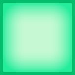

Python Projects
My most significant python projects are available at github.com/JRock007. Most of them are completed, though I am part of a 4 students team working on LibreCast, a smart client to peer-to-peer video streaming. Here are my main python projects:
Notes MakerNotes Maker, a simple text editor made for students who wish to take notes in class, and then convert them to fully-readable content.Available at github.com/JRock007/Notes-Maker. |
|
 |
BoxxyBoxxy, a two-player turn-by-turn based game, where the goal is to complete squares on a 6 by 6 board. One player hosts the server, enabling multiple users to play over the network.Available at github.com/JRock007/boxxy. |
LibreCastLibreCast, a work-in-progress client allowing users to stream video directly from a server or by using peer-to-peer technology. LibreCast protects both users and publishers’ privacy.The source code is available at github.com/LibreCast/LibreCast, and you can read more about the app itself here. |